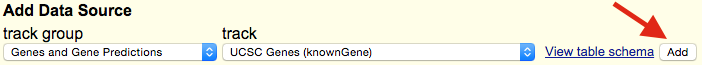
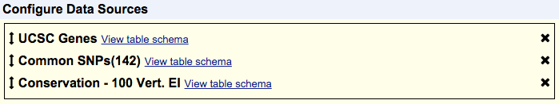
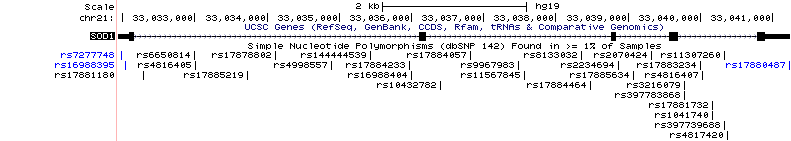
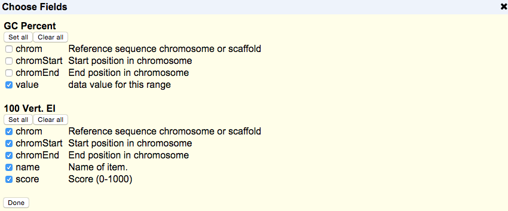
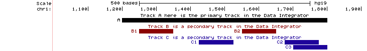

Questions and feedback are welcome.
The Data Integrator is a fast and powerful graphical interface that can combine and export data from multiple tracks simultaneously. Like the Genome Browser and Table Browser, it can combine data from the browser database, user custom tracks and track hubs.
Using the Data Integrator, you can retrieve tab-separated text for the data underlying up to five tracks, combining multiple tracks' data for items whose genomic positions overlap the positions of items in the first selected track. Depending on your needs, you may:
The Data Integrator does not yet have many of the features of the Table Browser tool. For example, if you want to retrieve DNA sequence or GTF format, you will need to use the Table Browser.
Visit our YouTube channel.
Follow these instructions to perform a basic query that intersects two or more tracks:
Step 1. Pick a genome assembly
Specify the genome assembly from which you'd like to retrieve the data by choosing the appropriate
organism using the group and genome menus, then selecting the
assembly version from the assembly menu. Note that changing the
group menu causes the genome menu to refresh, and changing the
genome menu causes the assembly menu to refresh. Assemblies that
are uploaded as part of an assembly hub will be available
under the hub's name in the group menu.
Step 2. Pick a genomic region
The Data Integrator allows you to choose the genomic regions for which you want output.
Step 3. Configure your data sources
The track group menu shows all the annotation track groups available in the
selected genome assembly. The names correspond to the groupings displayed at the bottom of the
Genome Browser annotation tracks page. When a group is selected from the menu, the
track menu automatically updates to show all the annotation tracks available within
that group.

After selecting your track from the drop-down menus, click . You may add up to five tracks. Some tracks are not available when the region is set to genome due to the data provider's restrictions on sharing. See the Selecting Data Sources section for more details.
Step 4. Rearrange your data sources (Optional)
You can rearrange your data sources by clicking on a track name and dragging it into the desired
order. Items are output based on their overlap with the first listed track. The order of the tracks
will also determine the order of the fields in the output. Fields from tracks higher in the list
will appear first in the output.
Step 5. Choose output fields (Optional)
Click to bring up a checklist of all fields from all
selected data sources. By default, every field is selected. You can choose the columns you want in
your output by checking the box next to that field. Additionally, you can add and select fields from
up to four related tables. See the Configuring Output section for more
details.
Step 6. Get output
Click to display the results of the query in the web
browser window. The results will be displayed as tab-delimited text. Download results as a file by
checking the box next to Send output to file and entering a file name into the box.
The output file can also be compressed by gzip.
The Data Integrator allows you to select up to five data sources to intersect. These data sources can be tracks provided by UCSC or your own data uploaded using custom tracks or track hubs. Only positional tables, such as BED, wiggle, and genePred, are currently allowed in the output. Other formats such as MAF or BAM are currently unavailable in the Data Integrator.
Items in your selected tracks are output based on their overlap with items in your primary track. The primary track is the one that shows up first in the list of your chosen data sources. In the following example, UCSC Genes would be the primary track and items would be output based on their overlap with items in UCSC Genes:

The order of your selected tracks also affects the order of fields in your output. Fields from tracks that are higher up in the Configure Data Sources box will show up before tracks that are lower in that box. Using the same order of tracks seen in the previous example, this means that fields from the UCSC Genes track will appear first in the output, then fields from DNase Clusters and lastly fields from Conservation - 100 Vert. El. However, your tracks aren't limited to the order in which you selected them, and you can rearrange the order of your tracks at any time. To do so, just click and drag a track to a new position in the list. A track can be removed by clicking the "X" next to it.
Some data providers stipulate that their data can be browsed visually in the Genome Browser, but cannot be provided for download via the Table Browser or Data Integrator. Tracks from those providers do not appear in the track menus. Other providers allow queries within specific regions, but not genome-wide queries. Their tracks appear in the menus, but are grayed out when region is set to genome.
The current intersection mechanism the Data Integrator uses is fairly simple. For gene transcripts, mRNAs, and any other tracks where the items have blocks or gaps, the overlap for the entire range of the item is computed. This means that introns and gaps in the item are also considered when computing overlap. This is an improvement upon the Table Browser which only computed overlap with exons. For example, let's consider the following situation using the UCSC Genes and DNase Clusters tracks:

If we were using the Data Integrator to find the DNase peaks that overlapped with the gene in the UCSC Genes track, we would get all of the visible peaks in our output.
Additionally, items are output regardless of the amount of overlap. This means that if there is even a single base of overlap between two items, they are included in the output.
By default, the Data Integrator outputs all fields of all data sources except for the
bin column of database tables (a numerical index added by UCSC to speed up database
queries). If you are interested in the data from a limited number of fields, you can customize the
set of fields to include in the output. After selecting and configuring your data sources as
described in the Selecting Data Sources section, click
to begin configuring your output. After clicking
the button, a pop-up with all the fields from your selected tables will appear:

Uncheck the box next to the field name to exclude it from the output; check the box if you change your mind and want to include it. You can quickly select or deselect all of the fields by clicking or below the track name.
In the UCSC Genome Browser database, detailed information on the annotations for many tracks is stored in extra tables. This information can include things such as identifiers in other databases, transcript status, or other descriptive information. You can select fields from up to four of these related tables for each of your selected tracks. After clicking , you should see a section labeled "Related tables" below each track. This drop-down menu allows you to select and add related tables to your output.
Note that not all tracks in the Genome Browser database will have related tables. Also, some tables may be unavailable when region is set to genome due to the data provider' s restrictions on sharing. If no "Related tables" section appears for a particular selected track, then there are no related tables for this track.
After you have finished selecting your output fields and related tables, click at the bottom of the dialog box to finish configuring your output.
If you want to view your results in the web browser window, simply click . Or, if you want to send your output to a file, check the box next to Send output to file. You can compress your output file using gzip by checking the box next to Compress with gzip (.gz). Then click to begin downloading your file.
Note that for wiggle tracks, the "Value" field is averaged across the region of overlap. In the future, we intend to add an option to output all of the data values in that region of overlap.
If a single item in the primary track has multiple matches in a secondary track, then the Data Integrator outputs multiple rows. Each row repeats the fields of the primary track item, and then adds fields of the nth matching item from each secondary track. If there are multiple secondary tracks, then their items will appear together in a row of output whether or not they overlap each other. For example, note how items overlap (or not) in the three tracks A, B and C in the image below:

Two items from track B (B1, B2) overlap the primary item (A). Three items from track C (C1, C2, C3) overlap the primary item (A). The Data Integrator prints 3 rows of output. B1 and C1, although they do not overlap, appear together in the first row of output. B2 and C2 appear together in the second row of output. The third row of output has empty fields for track B followed by C3's fields. This is the output (when A, B and C are 4-field BED custom tracks; colors added for emphasis):
#A.chrom A.chromStart A.chromEnd A.name B.chrom B.chromStart B.chromEnd B.name C.chrom C.chromStart C.chromEnd C.name
chr1 1200 1800 A chr1 1250 1350 B1 chr1 1425 1525 C1
chr1 1200 1800 A chr1 1550 1650 B2 chr1 1675 1775 C2
chr1 1200 1800 A chr1 1700 1800 C3